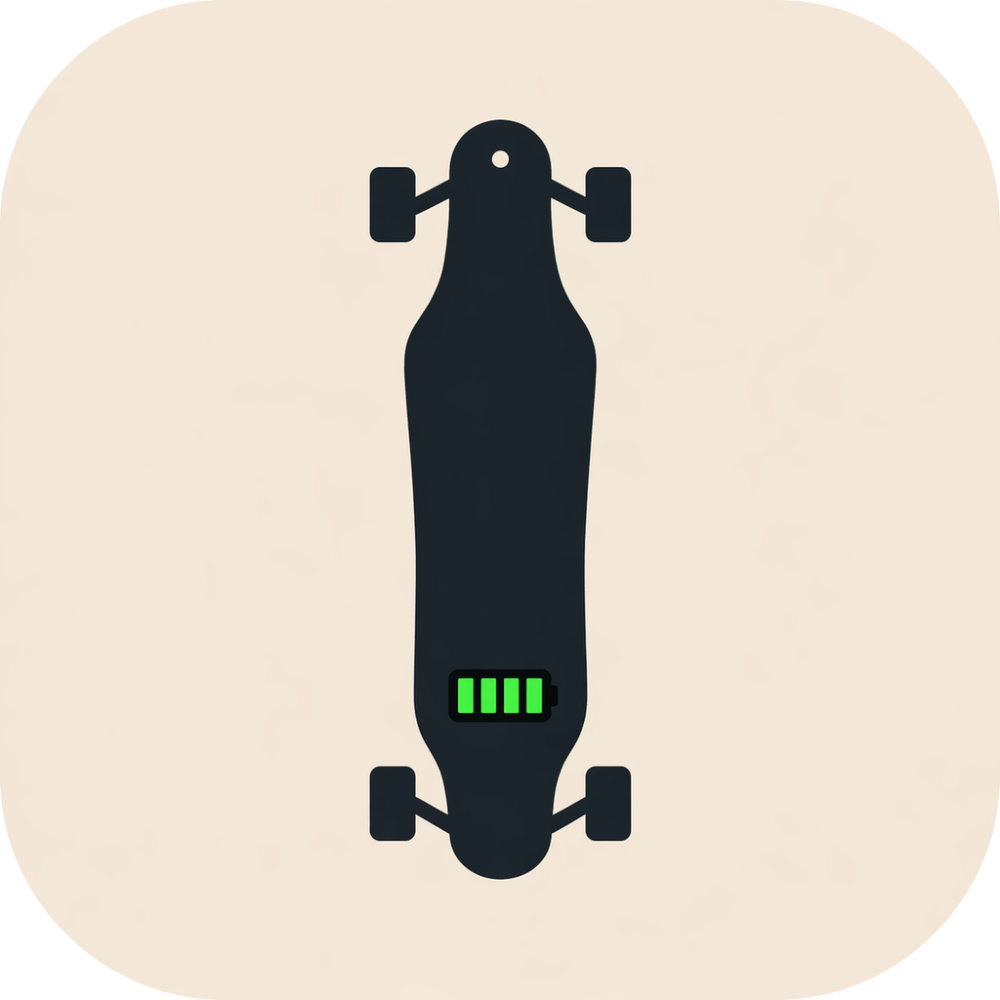

DeckWatch Support
DeckWatch is a Bluetooth app for monitoring electric skateboard diagnostics and battery performance.
Support
Email:
shaunhoggan@gmail.com
Please include:
- Board model (e.g., GTR, Diablo)
- iPhone model
- iOS version
- Description of the issue
Getting Started
- Enable Bluetooth on your device
- Power on your skateboard
- Keep your phone within ~10–15 feet of the board
- Open DeckWatch and connect
Common Issues
- App not connecting: Restart Bluetooth and reopen the app
- No data showing: Ensure the board is powered on
- Incorrect readings: Reconnect and refresh
- App freezing: Restart the app
Privacy
DeckWatch does not collect or store personal data. All Bluetooth communication is local to your device.